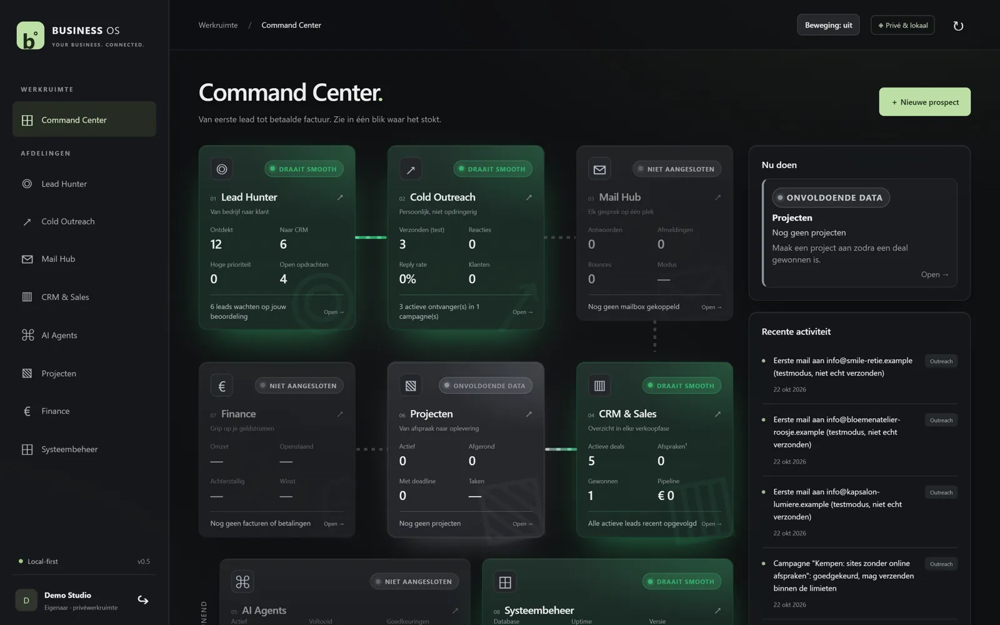
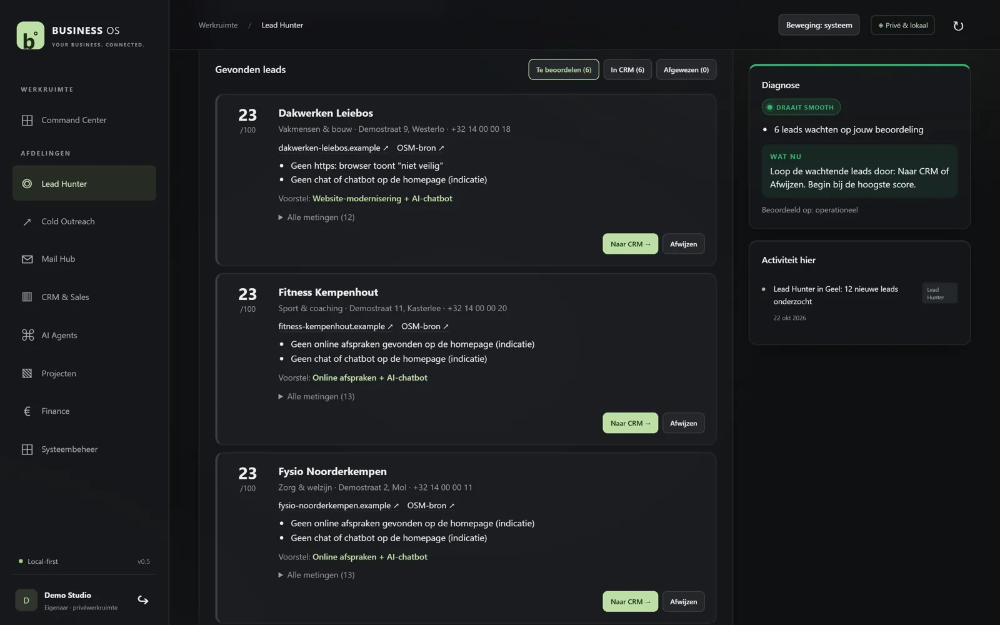
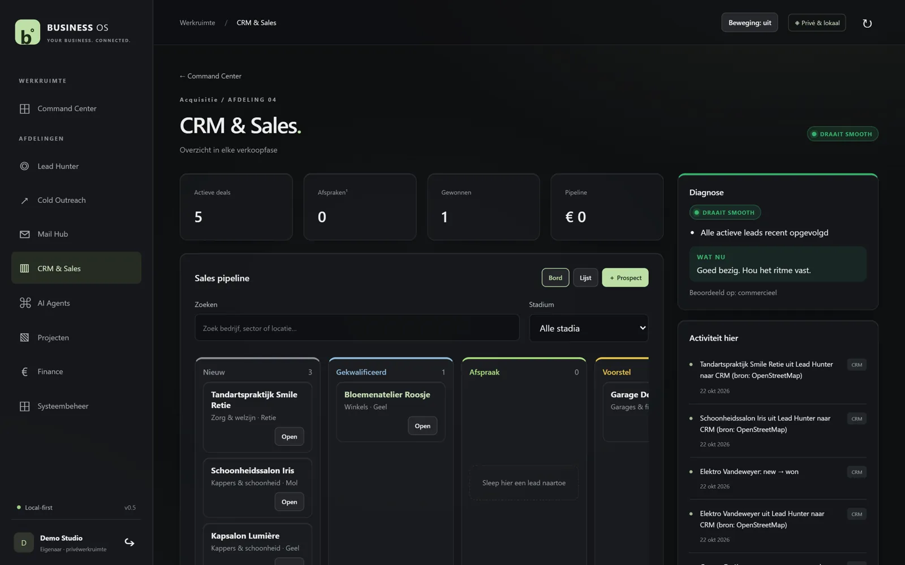
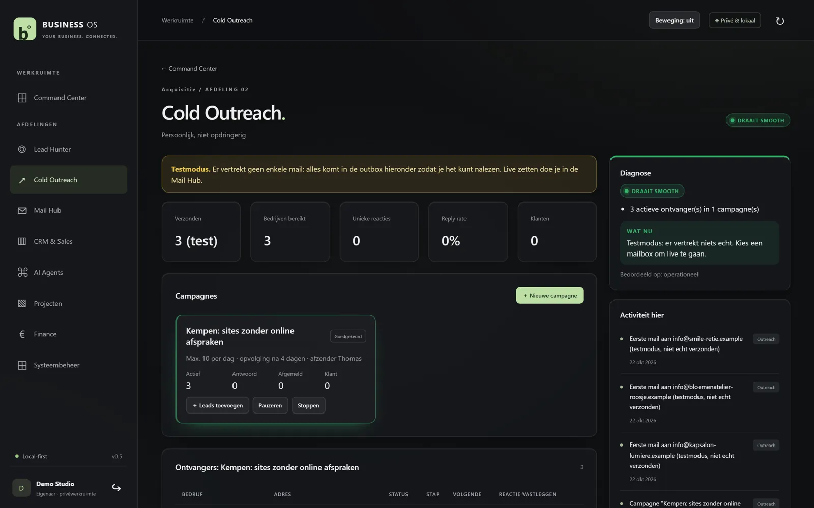

Lead Hunter
Kies een gemeente en een sector. Je krijgt de beste 20 bedrijven om aan te spreken, zonder ketens, met de reden erbij.
In ontwikkeling, wachtlijst open
Business OS zoekt bedrijven, licht hun website door en bewaakt je opvolging. Voor freelancers en kleine bureaus.




Screenshots met verzonnen demogegevens.
Kies een gemeente en een sector. Je krijgt de beste 20 bedrijven om aan te spreken, zonder ketens, met de reden erbij.
Snelheid, gsm, contactknop, chatbot, online betalen en toegankelijkheid. Je weet wat je komt oplossen.
Het weet wie je mag mailen en wie niet. Nooit dubbel, altijd een afmeldlink.
Sleep kaartjes van eerste contact naar klant, met notities en activiteiten erbij.
Elke afdeling krijgt een statuskleur. Wat vandaag aandacht vraagt, staat bovenaan.
Gebouwd om in België te draaien, met een reservekopie elke nacht. Exporteer alles wanneer je wil.
Per adres beslist Business OS of je mag mailen. Twijfel? Dan vraagt het jou.
Daarbovenop: een daglimiet, nooit twee keer dezelfde mail, en een blokkeerlijst voor wie zich afmeldt.
Indicatieve prijzen per maand, exclusief btw. Definitief bij de lancering. Wie op de wachtlijst staat, krijgt een lanceringskorting.
€29/maand
Voor wie net begint met prospectie.
Aanrader
€59/maand
Voor freelancers die vaste instroom willen.
€119/maand
Voor kleine bureaus met een team.
Ik gebruik het vandaag zelf voor mijn freelancezaak. Zodra het klaar is voor andere gebruikers, krijgt de wachtlijst als eerste toegang. Een datum beloof ik pas als ik zeker ben.
Een vennootschap op een algemeen adres zoals info@ wel, met een afmeldlink. Een eenmanszaak of een persoonlijk adres enkel met toestemming. Business OS houdt dat per adres voor je bij.
Business OS is gebouwd om in België te draaien. Elke nacht gaat er een reservekopie van, en je kan al je gegevens exporteren. Je bezit je klantenlijst, niet ik.
Zoeken en doorlichten werkt overal waar er kaartgegevens zijn. De mailregels zijn afgestemd op België. Voor andere landen kijken we na de lancering.
Voor een freelancer of klein bureau vaak wel. Business OS legt de nadruk op klanten vinden en opvolgen, niet op facturatie of grote teams.
Ja. In het pakket Bureau kan het op je eigen server draaien. Laat het weten op de wachtlijst, dan bekijken we samen wat je nodig hebt.
Je krijgt als eerste toegang en een lanceringskorting. Geen spam, enkel een bericht als er nieuws is.
Lees eerst het verslag